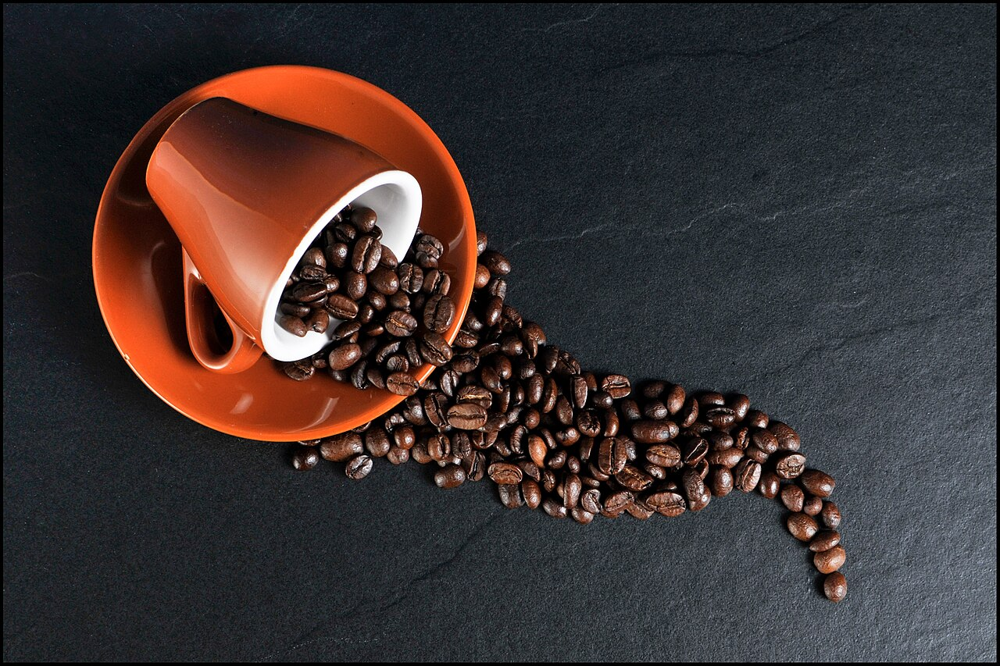
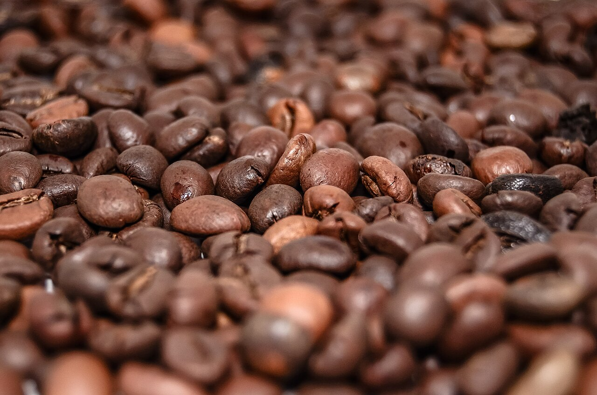
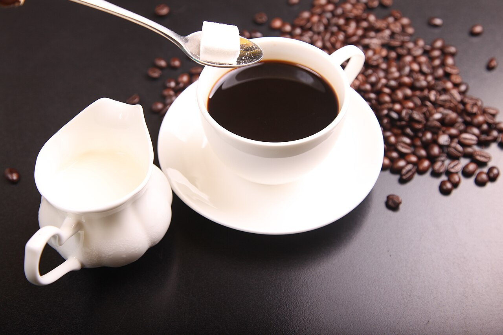

Mỗi ngày uống bao nhiêu tách cà phê là đủ? 4–5 tách là giới hạn, 2–3 tách là tốt nhất

Mỗi ngày uống bao nhiêu tách cà phê là đủ? 4–5 tách là giới hạn, 2–3 tách là tốt nhất: với phần lớn người trưởng thành khỏe mạnh, giới hạn caffeine an toàn là 400 mg mỗi ngày (khoảng 4–5 tách cà phê), còn 2–3 tách mỗi ngày là mức nhiều nghiên cứu liên hệ với lợi ích sức khỏe rõ nhất. Nhưng mỗi người đào thải caffeine nhanh hay chậm khác nhau.
Có người uống một tách cà phê sau bữa tối rồi nằm trằn trọc đến khuya. Người khác lại phải uống hết tách này đến tách khác mới cảm thấy tỉnh táo như trước. Sự khác biệt ấy không đơn thuần nằm ở thói quen uống cà phê, mà còn liên quan đến cách cơ thể xử lý caffeine.
Lưu ý an toàn
Bài viết chỉ mang tính tham khảo chung, không thay thế lời khuyên y tế hay việc thăm khám của bác sĩ — các giới hạn trong bài chủ yếu áp dụng cho phần lớn người trưởng thành khỏe mạnh. Phụ nữ mang thai, thanh thiếu niên, trẻ em cần giới hạn thấp hơn; người mắc bệnh tim, lo âu thường xuyên hay mất ngủ cũng cần thận trọng. Cà phê không nên dùng để ép cơ thể làm việc tiếp khi đã mệt mỏi kéo dài. Có bệnh lý riêng hay đang dùng thuốc thì hỏi bác sĩ về lượng caffeine phù hợp.
1. Giới hạn 400 mg caffeine mỗi ngày
Theo FDA, phần lớn người trưởng thành khỏe mạnh có thể tiêu thụ khoảng 400 mg caffeine mỗi ngày mà không gặp tác động tiêu cực đáng kể — tương đương khoảng 4 tách cà phê pha (mỗi tách khoảng 240 ml), tùy loại hạt, cách pha và độ đậm đặc.
Tại Mỹ, mức tiêu thụ trung bình khoảng 300 mg mỗi ngày. Thường xuyên trên 600 mg mỗi ngày được xem là quá nhiều.
Nghiên cứu tim mạch tại châu Á năm 2024 trên 92 người khỏe mạnh 18–45 tuổi tại Bệnh viện Đại học Zydus (Ấn Độ) cho thấy trên 400 mg caffeine mỗi ngày có thể làm nhịp tim và huyết áp tăng theo thời gian, ngay cả ở người vốn khỏe mạnh — ở mức 600 mg, sự gia tăng này rõ rệt hơn.
Giới hạn 400 mg là mức tham khảo, không phải mục tiêu ai cũng cần uống cho đủ.
2. 2–3 tách là mức vừa đẹp nhất
Nếu 400 mg là giới hạn tham khảo, uống bao nhiêu mới hợp lý? Nhiều nghiên cứu cho thấy 2–3 tách mỗi ngày có mối liên hệ đáng chú ý với sức khỏe và tuổi thọ.
Đại học Harvard theo dõi gần 50.000 phụ nữ trong 30 năm (công bố tháng 6/2025): nhóm uống 1–3 tách mỗi ngày lão hóa khỏe mạnh hơn, tim mạch tốt hơn, tử vong thấp hơn. Nghiên cứu lớn năm 2022: nhóm uống 2–3 tách mỗi ngày có tỷ lệ tử vong sớm thấp nhất. Nghiên cứu tại Anh năm 2024: nhóm uống khoảng 3 tách mỗi ngày giảm 48% nguy cơ bệnh tim mạch chuyển hóa so với nhóm không uống hoặc uống dưới 1 tách.
Tạp chí Dinh dưỡng (The Journal of Nutrition) cũng chỉ ra mức 2–3 tách mỗi ngày là lựa chọn nổi bật khi xét đến tuổi thọ. Nghiên cứu trên NEJM ghi nhận uống nhiều cà phê hơn liên hệ với nguy cơ tử vong do nhiều nguyên nhân thấp hơn.
Những kết quả này chỉ phản ánh mối liên hệ thống kê — không chứng minh cứ uống thêm thì chắc chắn sống lâu hơn.
3. Chuyển hóa nhanh hay chậm — cơ thể bạn quyết định
Không phải ai uống cùng một lượng cà phê cũng đào thải caffeine với tốc độ giống nhau — có người uống buổi sáng, đến tối đã bình thường; có người chỉ uống một tách buổi sáng mà đêm vẫn khó ngủ.
Nghiên cứu tại châu Âu trên 15 người uống cà phê thường xuyên: mỗi người uống một tách chứa 400 mg caffeine, xét nghiệm máu sau 24 giờ. Nhóm chuyển hóa nhanh chỉ còn khoảng 1.674 nanogram caffeine trên mỗi mililit máu, nhóm chuyển hóa chậm vẫn còn hơn 17.000 — gần như vừa uống thêm một tách.
Đây là lý do một số người khó ngủ dù chỉ uống cà phê buổi sáng. Ở người chuyển hóa chậm, tiêu thụ nhiều caffeine còn liên hệ với nguy cơ nhồi máu cơ tim không tử vong cao hơn.
Bob Arnot, tự nhận mình chuyển hóa caffeine chậm, chỉ uống nửa tách cà phê giàu phenol buổi sáng, tối đa 1–2 tách mỗi ngày, rồi chuyển sang cà phê giàu phenol đã khử caffeine. Theo ông, một tách cà phê giàu phenol cho nhiều lợi ích hơn 10 tách ít phenol.

4. Ai nên uống ít hơn, và uống thế nào cho tốt hơn?
Phụ nữ mang thai nên giữ caffeine dưới 200 mg mỗi ngày, phụ nữ cho con bú dưới 300 mg mỗi ngày. Học viện Nhi khoa Hoa Kỳ khuyến nghị trẻ dưới 12 tuổi không dùng caffeine, thanh thiếu niên 12–18 tuổi tối đa 100 mg mỗi ngày.
Người mắc bệnh tim hoặc tiểu đường nên chú ý cả đường và chất phụ gia đi kèm, không chỉ số tách — theo chuyên gia dinh dưỡng Nikki Cota tại Phòng khám Mayo (Mỹ). Bồn chồn, khó ngủ về đêm hay tim đập nhanh là dấu hiệu đã uống quá nhiều. Bác sĩ thần kinh Đại học Harvard khuyên bệnh nhân lo âu nên cắt giảm cà phê trước tiên.
Ưu tiên cà phê không đường, hạn chế siro tạo hương vị, dùng sữa ít béo thay cho kem. Cà phê pha từ bột xay tốt hơn cà phê hòa tan: nghiên cứu năm 2022 ghi nhận nhóm uống cà phê xay giảm 27% tỷ lệ tử vong sớm, nhóm uống cà phê hòa tan chỉ giảm 11%.
Caffeine đạt nồng độ cao nhất trong máu sau khoảng một giờ, tác dụng kéo dài 4–6 giờ — uống cuối ngày dễ ảnh hưởng giấc ngủ. Cà phê đã khử caffeine vẫn còn khoảng 2–5 mg mỗi tách. Caffeine còn có trong trà, nước tăng lực, nước ngọt, sô-cô-la, kẹo dẻo, kẹo cao su, siro và bánh quế — muốn kiểm soát lượng caffeine mỗi ngày, cần tính cả những nguồn này.

Giới hạn cần nhớ
Các con số trong bài là giới hạn và mối liên hệ thống kê cho phần lớn người trưởng thành khỏe mạnh — không phải liều lượng ai cũng nên uống cho đủ, và không chứng minh cứ uống thêm thì chắc chắn khỏe hơn. Caffeine cộng dồn từ mọi nguồn trong ngày. Người mang thai, cho con bú, trẻ em, thanh thiếu niên, người có bệnh tim, lo âu hay mất ngủ nên hỏi bác sĩ về giới hạn phù hợp với mình.
Kết lại: với phần lớn người trưởng thành khỏe mạnh, không nên vượt quá 400 mg caffeine mỗi ngày (khoảng 4–5 tách tùy độ đậm đặc); 2–3 tách mỗi ngày là mức nhiều nghiên cứu liên hệ với sức khỏe và tuổi thọ. Hãy lắng nghe cơ thể, vì mỗi người chuyển hóa caffeine khác nhau. Đang mang thai, ở tuổi thanh thiếu niên, có bệnh lý riêng hay nhạy cảm với caffeine thì uống ít hơn và hỏi bác sĩ.
- Muốn bài viết có thêm người hỏi mua? Xem các gói tăng tương tác tại viettuongtac.com.
- Cần một website bán hàng để khách xem mẫu và đặt hàng dễ hơn? Xem mẫu tại webkhoinguon.com.


💬 Bình luận
Đang tải bình luận…